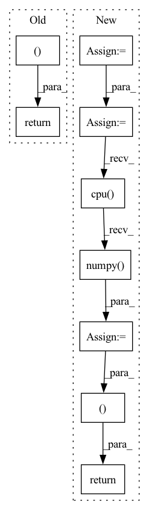

Pattern ID :8256

Before Change
real_feat_indices = np.random.permutation(total_instance)[:num_feats]
real_feats = real_feats.detach().cpu().numpy()[real_feat_indices].astype(np.float64)
real_labels = real_labels.detach().cpu().numpy()[real_feat_indices]
return real_feats, real_feat_indices, real_labels
After Change
real_labels.append(labels)
real_feats = torch.cat(real_feats, dim=0)
real_probs = torch.cat(real_probs, dim=0)
real_labels = torch.cat(real_labels, dim=0)
if DDP:
real_feats = torch.cat(losses.GatherLayer.apply(real_feats), dim=0)
real_probs = torch.cat(losses.GatherLayer.apply(real_probs), dim=0)
real_labels = torch.cat(losses.GatherLayer.apply(real_labels), dim=0)
real_feat_indices = np.random.permutation(num_feats)
real_feats = real_feats.detach().cpu().numpy()[real_feat_indices].astype(np.float64)
real_probs = real_probs.detach().cpu().numpy()[real_feat_indices].astype(np.float64)
real_labels = real_labels.detach().cpu().numpy()[real_feat_indices]
return real_feats, real_probs, real_feat_indices, real_labels
In pattern: SUPERPATTERN
Frequency: 3
Non-data size: 9
Instances
Fragment ID: 29064831
Project Name: postech-cvlab/pytorch-studiogan
Commit Name: e9b9424ea383996bb391e5c68e5c50071b818637
Time: 2022-03-30
Author: first287@naver.com
File Name: src/metrics/features.py
M Class Name: AnonimousClass
N Class Name: AnonimousClass
M Method Name: stack_features(8)
N Method Name: stack_features(8)
M Parent Class:
N Parent Class:
M File Name: src/metrics/features.py
N File Name: src/metrics/features.py
M Start Line: 106
M End Line: 134
N Start Line: 110
N End Line: 138
'>
Before Change
wavs, lens = truncate(wavs, lens, params.max_length)
wavs, lens = wavs.to(params.device), lens.to(params.device)
loss = params.compute_cost(predictions, wavs, lens)
return loss, {}
def evaluate_batch(self, batch, stage="valid"):
inputs, targets = batch
After Change
def compute_objectives(self, predictions, targets, stage="train"):
ids, target_wavs, lens = targets
target_wavs, lens = truncate(target_wavs, lens, params.max_length)
target_wavs = target_wavs.to(params.device)
lens = lens.to(params.device)
loss = params.compute_cost(predictions, target_wavs, lens)
stats = {}
if stage != "train":
lens = lens * target_wavs.shape[1]
pesq_scores = multiprocess_evaluation(
predictions.cpu().numpy(),
target_wavs.cpu().numpy(),
lens.cpu().numpy(),
multiprocessing.cpu_count(),
)
stats["pesq"] = pesq_scores
stats["stoi"] = -stoi_loss(predictions, target_wavs, lens)
if stage == "test":
// Write wavs to file
for name, pred_wav, length in zip(ids, predictions, lens):
name += ".wav"
enhance_path = os.path.join(params.enhanced_folder, name)
torchaudio.save(
enhance_path, pred_wav[: int(length)].to("cpu"), 16000
)
return loss, stats
def on_epoch_end(self, epoch, train_stats, valid_stats):
if params.use_tensorboard:
'>
Fragment ID: 29064830
Project Name: speechbrain/speechbrain
Commit Name: 3f3b92bc7eb78dacaae812693f782cb134ef4358
Time: 2020-08-05
Author: plantinga.peter@protonmail.com
File Name: recipes/Voicebank/enhance_waveform_map/experiment.py
M Class Name: SEBrain
N Class Name: SEBrain
M Method Name: compute_objectives(4)
N Method Name: compute_objectives(4)
M Parent Class: sb.core.Brain
N Parent Class: sb.core.Brain
M File Name: recipes/Voicebank/enhance_waveform_map/experiment.py
N File Name: recipes/Voicebank/enhance_waveform_map/experiment.py
M Start Line: 85
M End Line: 87
N Start Line: 85
N End Line: 110
'>
Before Change
buckets = torch.bucketize(sizes, size_bins)-1
stratified_risks = torch.tensor([losses[buckets == bucket].mean() for bucket in range(size_bins.shape[0])])
print(f"Model output shape: {x.shape}, label shape: {labels.shape}, Sets shape: {sets[2].shape}, sizes: {sizes}, size_bins:{size_bins}, stratified_risks: {stratified_risks}, mse: {mse}")
return losses, sizes, spearman, stratified_risks, mse
def evaluate_from_loss_table(loss_table,n,alpha,delta):
with torch.no_grad():
perm = torch.randperm(loss_table.shape[0])
After Change
losses = []
sizes = []
residuals = []
spatial_miscoverages = []
dataloader = DataLoader(out_dataset, batch_size=64, shuffle=False, num_workers=0, pin_memory=True)
model = model.to(device)
for batch in dataloader:
x, labels = batch
labels = labels.to(device)
sets = model.nested_sets_from_output(x.to(device))
losses = losses + [rcps_loss_fn(sets, labels),]
sets_full = (sets[2]-sets[0]).flatten(start_dim=1).detach().cpu().numpy()
size_random_idxs = np.random.choice(sets_full.shape[1],size=sets_full.shape[0])
size_samples = sets_full[range(sets_full.shape[0]),size_random_idxs]
residuals = residuals + [(labels - sets[1]).abs().flatten(start_dim=1)[range(sets_full.shape[0]),size_random_idxs]]
spatial_miscoverages = spatial_miscoverages + [(labels > sets[2]).float() + (labels < sets[0]).float()]
sizes = sizes + [torch.tensor(size_samples),]
losses = torch.cat(losses,dim=0)
sizes = torch.cat(sizes,dim=0)
sizes = sizes + torch.rand(size=sizes.shape).to(sizes.device)*1e-6
residuals = torch.cat(residuals,dim=0).detach().cpu().numpy()
spearman = spearmanr(residuals, sizes)[0]
mse = (residuals*residuals).mean().item()
spatial_miscoverage = torch.cat(spatial_miscoverages, dim=0).detach().cpu().numpy().mean(axis=0).mean(axis=0)
size_bins = torch.tensor([0, torch.quantile(sizes, 0.25), torch.quantile(sizes, 0.5), torch.quantile(sizes, 0.75)])
buckets = torch.bucketize(sizes, size_bins)-1
stratified_risks = torch.tensor([losses[buckets == bucket].mean() for bucket in range(size_bins.shape[0])])
print(f"Model output shape: {x.shape}, label shape: {labels.shape}, Sets shape: {sets[2].shape}, sizes: {sizes}, size_bins:{size_bins}, stratified_risks: {stratified_risks}, mse: {mse}")
return losses, sizes, spearman, stratified_risks, mse, spatial_miscoverage
def evaluate_from_loss_table(loss_table,n,alpha,delta):
with torch.no_grad():
perm = torch.randperm(loss_table.shape[0])
'>
Fragment ID: 29064835
Project Name: aangelopoulos/im2im-uq
Commit Name: eb08020dd8e3947a3c1f6d97819e247c0610dbab
Time: 2022-06-15
Author: angelopoulos@berkeley.edu
File Name: core/calibration/calibrate_model.py
M Class Name: AnonimousClass
N Class Name: AnonimousClass
M Method Name: get_rcps_metrics_from_outputs(4)
N Method Name: get_rcps_metrics_from_outputs(4)
M Parent Class:
N Parent Class:
M File Name: core/calibration/calibrate_model.py
N File Name: core/calibration/calibrate_model.py
M Start Line: 47
M End Line: 57
N Start Line: 35
N End Line: 60